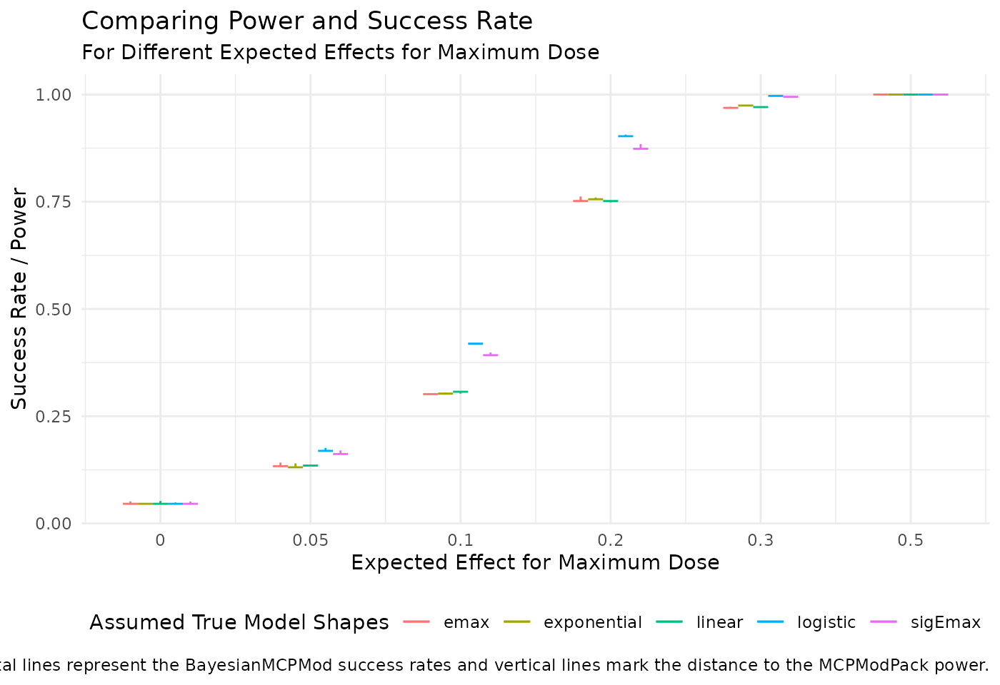
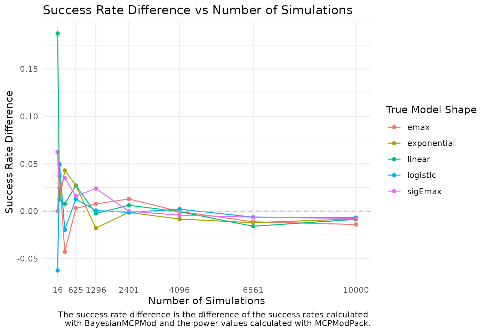

Comparison of Bayesian MCPMod and MCPMod
Source:vignettes/Simulation_Comparison.Rmd
Simulation_Comparison.Rmd
library(BayesianMCPMod)
library(DoseFinding)
library(MCPModPack)
library(tidyr)
library(dplyr)
library(kableExtra)
library(ggplot2)
library(doFuture)Introduction
This vignette demonstrates the application of the BayesianMCPMod package for sample size calculations and the comparison with the MCPModPack package. Bayesian MCPMod is set up in a way that it mimics the results (and operating characteristics) of the frequentist MCPMod for vague priors. This characteristic is illustrated in the following sections focusing on the trial planning.
The following dose-finding scenario is considered to compare Bayesian MCPMod and MCPModPack success probabilities:
Four dose levels plus placebo (0 mg, 1 mg, 2 mg, 4 mg, 8 mg)
Total sample size of N = 200 with an equal allocation ratio for each dose group, i.e., 40 per group
Standard deviation of 0.4 for every dose group
Alpha level of 5%
doses_sim <- c(0, 1, 2, 4, 8)
n_sample <- c(40, 40, 40, 40, 40)
sd_sim <- 0.4
max_dose <- max(doses_sim)
plc_eff_guess <- 0
alpha <- 0.05Simulations are performed with 10000 runs. Given the number of simulations and applying the law of large numbers, the difference in success probabilities should be in the range of 1% - 3%.
set.seed(7015)
n_sim <- 10000
plan(multisession)
registerDoFuture()In the following figure shows the considered candidate models.
emax_guess <- guesst(d = doses_sim[2], p = 0.6, "emax")
exp_guess <- guesst(d = doses_sim[2], p = 0.05, model = "exponential", Maxd = max_dose)
logit_guess <- guesst(d = c(doses_sim[2], doses_sim[3]), p = c(0.1, 0.9), "logistic", Maxd = max_dose)
sig_emax_guess <- guesst(d = c(doses_sim[2], doses_sim[3]), p = c(0.15, 0.75), model = "sigEmax")
plot(Mods(linear = NULL,
exponential = exp_guess,
emax = emax_guess,
logistic = logit_guess,
sigEmax = sig_emax_guess,
doses = doses_sim,
placEff = plc_eff_guess,
direction = "increasing"),
main = "Candidate Models")Varying the Expected Effect for Maximum Dose
The following expected effects are studied:
- Expected effect for maximum dose of 0.0001, 0.05, 0.1, 0.2, 0.3, and 0.5
exp_eff <- c(0.0001, 0.05, 0.1, 0.2, 0.3, 0.5)The value of 0.0001 was chosen instead of 0 due to technical reasons. This case should mimic the null scenario (where we expect a success probability close to the alpha level).
# Simulation parameters
sim_parameters <- list(n = n_sample,
doses = doses_sim,
dropout_rate = 0.0,
go_threshold = 0.1,
nsims = n_sim)
# Candidate dose - response models
models_MCPModPack = list(linear = NA,
exponential = exp_guess,
emax = emax_guess,
logistic = logit_guess,
sigemax = sig_emax_guess)
# Assumed dose - response models (models will be added in loop)
sim_models_part <- list(max_effect = exp_eff,
sd = rep(sd_sim, length(doses_sim)),
placebo_effect = plc_eff_guess)
# Parallelization across assumed dose - response models
powers_MCPModPack_eff <- foreach(
k = seq_along(models_MCPModPack),
.combine = cbind,
.options.future = list(seed = TRUE)) %dofuture% {
sim_model_k <- c(models_MCPModPack[k], sim_models_part)
MCPModSimulation(endpoint_type = "Normal",
models = models_MCPModPack,
alpha = alpha,
direction = "increasing",
model_selection = "aveAIC",
Delta = 0.1,
sim_models = sim_model_k,
sim_parameters = sim_parameters)$sim_results$power
}
# Post-processing result for printing
colnames(powers_MCPModPack_eff) <- names(models_MCPModPack)
results_MCPModPack_eff <- cbind(max_eff = round(exp_eff, digits = 2),
powers_MCPModPack_eff) %>%
data.frame() %>%
rename(sigEmax = sigemax) %>%
mutate(average = rowMeans(select(., linear:sigEmax)))
# Vague prior specification
prior_list_vague <- rep(list(RBesT::mixnorm(comp1 = c(w = 1, m = 0, n = 1),
sigma = sd_sim, param = "mn")),
times = length(doses_sim))
names(prior_list_vague) <- c("Ctrl", "DG_1", "DG_2", "DG_3", "DG_4")
# Parallelization across the expected effects for maximum dose
success_rates_BayesianMCPMod_eff <- foreach(
k = seq_along(exp_eff),
.combine = rbind,
.options.future = list(seed = TRUE)) %dofuture% {
exp_eff_k <- exp_eff[k]
models_BayesianMCPMod <- Mods(linear = NULL,
exponential = exp_guess,
emax = emax_guess,
logistic = logit_guess,
sigEmax = sig_emax_guess,
doses = doses_sim,
placEff = plc_eff_guess,
maxEff = exp_eff_k,
direction = "increasing")
# Optimal contrasts
contr <- getContr(mods = models_BayesianMCPMod,
dose_levels = doses_sim,
prior_list = prior_list_vague,
dose_weights = rep(1, length(doses_sim)))
# Perform Simulations
sim_result <- assessDesign(n_patients = n_sample,
mods = models_BayesianMCPMod,
prior_list = prior_list_vague,
sd = sd_sim,
n_sim = n_sim,
alpha_crit_val = alpha,
contr = contr)
c(sapply(sim_result, attr, "successRate"),
average = attr(sim_result, "avgSuccessRate"))
}
# Post-processing result for printing
rownames(success_rates_BayesianMCPMod_eff) <- NULL
results_BayesianMCPMod_eff <- data.frame(cbind(max_eff = round(exp_eff, digits = 2),
success_rates_BayesianMCPMod_eff))The following plot shows the differences between the results obtained with MCPModPack and BayesianMCPMod. The results of BayesianMCPMod are shown as horizontal lines and the differences to the results of MCPModPack are presented as vertical lines. As the results are close to one another, the vertical lines are barely visible. The colours indicate the different assumed true dose-response models, which were the basis for simulating the data.
## pre-processing the data
df_plot_eff <- rbind(results_MCPModPack_eff %>%
mutate(package_name = "MCPModPack"),
results_BayesianMCPMod_eff %>%
mutate(package_name = "BayesianMCPMod")) %>%
pivot_longer(cols = names(results_BayesianMCPMod_eff)[-1],
names_to = "model_shape",
values_to = "success_rate") %>%
filter(model_shape != "average") %>%
spread(key = package_name, value = success_rate) %>%
mutate(model_shape = as.factor(model_shape),
max_eff = as.factor(max_eff)) %>%
group_by(max_eff) %>%
mutate(offset = 0.1 * (seq_along(model_shape) - ceiling(length(model_shape) / 2)))
# Plot with short horizontal dashes for each model_shape
ggplot(df_plot_eff, aes(x = as.numeric(max_eff) + offset, y = BayesianMCPMod, color = model_shape)) +
geom_segment(aes(x = as.numeric(max_eff) + offset - 0.05, xend = as.numeric(max_eff) + offset + 0.05,
y = BayesianMCPMod, yend = BayesianMCPMod)) +
geom_segment(aes(xend = as.numeric(max_eff) + offset, yend = MCPModPack)) +
scale_x_continuous(breaks = unique(as.numeric(df_plot_eff$max_eff)), labels = levels(df_plot_eff$max_eff)) +
labs(title = "Comparing Power and Success Rate",
subtitle = "For Different Expected Effects for Maximum Dose",
x = "Expected Effect for Maximum Dose",
y = "Success Rate / Power",
color = "Assumed True Model Shapes",
linetype = "Type",
caption = "Horizontal lines represent the BayesianMCPMod success rates and vertical lines mark the distance to the MCPModPack power.") +
theme_minimal() +
theme(legend.position = "bottom")
As expected, the operating characteristics of BayesianMCPMod with vague priors match the operating characteristics of frequentist MCPMod.
Numerical results are shown in the two tables below.
kable(results_MCPModPack_eff) %>%
kable_classic() %>%
add_header_above(c("Power Values Across Different Expected Effects" = 7),
font_size = 15, bold = TRUE) %>%
add_header_above(c("MCPModPack" = 7), font_size = 15, bold = TRUE)|
MCPModPack
|
||||||
|---|---|---|---|---|---|---|
|
Power Values Across Different Expected Effects
|
||||||
| max_eff | linear | exponential | emax | logistic | sigEmax | average |
| 0.00 | 0.0522 | 0.0462 | 0.0513 | 0.0488 | 0.0510 | 0.04990 |
| 0.05 | 0.1370 | 0.1399 | 0.1417 | 0.1760 | 0.1702 | 0.15296 |
| 0.10 | 0.3027 | 0.3053 | 0.3028 | 0.4193 | 0.3985 | 0.34572 |
| 0.20 | 0.7486 | 0.7601 | 0.7623 | 0.9066 | 0.8846 | 0.81244 |
| 0.30 | 0.9696 | 0.9743 | 0.9715 | 0.9978 | 0.9956 | 0.98176 |
| 0.50 | 1.0000 | 1.0000 | 1.0000 | 1.0000 | 1.0000 | 1.00000 |
kable(results_BayesianMCPMod_eff) %>%
kable_classic(full_width = TRUE) %>%
add_header_above(c("Success Rates Across Different Expected Effects" = 7),
font_size = 15, bold = TRUE) %>%
add_header_above(c("BayesianMCPMod" = 7), font_size = 15, bold = TRUE) |
BayesianMCPMod
|
||||||
|---|---|---|---|---|---|---|
|
Success Rates Across Different Expected Effects
|
||||||
| max_eff | linear | exponential | emax | logistic | sigEmax | average |
| 0.00 | 0.0457 | 0.0457 | 0.0457 | 0.0457 | 0.0457 | 0.04570 |
| 0.05 | 0.1349 | 0.1309 | 0.1335 | 0.1692 | 0.1618 | 0.14606 |
| 0.10 | 0.3070 | 0.3027 | 0.3015 | 0.4192 | 0.3923 | 0.34454 |
| 0.20 | 0.7518 | 0.7559 | 0.7519 | 0.9029 | 0.8736 | 0.80722 |
| 0.30 | 0.9708 | 0.9744 | 0.9690 | 0.9969 | 0.9948 | 0.98118 |
| 0.50 | 1.0000 | 1.0000 | 1.0000 | 1.0000 | 1.0000 | 1.00000 |
Convergence of Power Values
In the following simulations, we examine the convergence of power and success rate values for an increasing number of simulations. For this, the expected maximum effect is fixed at 0.2.
exp_eff_fix <- 0.2The R package MCPModPack provides a final power result for a given number of simulations and does not allow accessing intermediate power values.
n_sim_vec <- seq(2, 10, 1)^4This is why the simulation is repeated for different values of number of simulations for the implementation with MCPModPack.
# Updating the assumed dose - response models for the fixed expected effect (models will be added in loop)
sim_models_part$max_effect <- exp_eff_fix
# Parallelization across assumed dose - response models & number of simulations
## Reversing the numbers speeds up parallelization in case there are not enough workers
sim_grid <- expand.grid(names(models_MCPModPack), rev(n_sim_vec))
powers_MCPModPack_conv <- foreach(
k = seq_len(nrow(sim_grid)),
.combine = c,
.options.future = list(seed = TRUE)) %dofuture% {
sim_model_k <- c(models_MCPModPack[sim_grid[k, 1]], sim_models_part)
sim_params_k <- sim_parameters
sim_params_k$nsims <- sim_grid[k, 2]
MCPModSimulation(endpoint_type = "Normal",
models = models_MCPModPack,
alpha = alpha,
direction = "increasing",
model_selection = "aveAIC",
Delta = 0.1,
sim_models = sim_model_k,
sim_parameters = sim_params_k)$sim_results$power
}
#Post-processing
results_MCPModPack_conv <- cbind(sim_grid, powers_MCPModPack_conv) %>%
arrange(desc(row_number())) %>%
rename(model_name = Var1,
n_sim = Var2,
success_rate = powers_MCPModPack_conv) %>%
mutate(model_name = if_else(model_name == "sigemax",
"sigEmax", model_name)) %>%
mutate(package_name = "MCPModPack")In the BayesianMCPMod implementation, only one simulation run is required to access the estimated success rate values at different numbers of simulations.
# Model specifications with fixed expected effect
models_BayesianMCPMod <- Mods(linear = NULL,
exponential = exp_guess,
emax = emax_guess,
logistic = logit_guess,
sigEmax = sig_emax_guess,
doses = doses_sim,
placEff = plc_eff_guess,
maxEff = exp_eff_fix,
direction = "increasing")
# Optimal contrasts
contr <- getContr(mods = models_BayesianMCPMod,
dose_levels = doses_sim,
prior_list = prior_list_vague,
dose_weights = rep(1, length(doses_sim)))
# Perform Simulations
sim_result <- assessDesign(n_patients = n_sample,
mods = models_BayesianMCPMod,
prior_list = prior_list_vague,
sd = sd_sim,
n_sim = max(n_sim_vec),
alpha_crit_val = alpha,
contr = contr)
# Getting success rates at different numbers of simulations
results_BayesianMCPMod_conv <- sapply(sim_result, function (model_result) {
sapply(n_sim_vec, function (n_sim_x) {
success_rate_x <- mean(model_result[seq_len(n_sim_x), 1])
})
}) %>%
# Post-processing
as.data.frame %>%
mutate(n_sim = n_sim_vec) %>%
pivot_longer(cols = -n_sim,
names_to = "model_name",
values_to = "success_rate") %>%
mutate(package_name = "BayesianMCPMod")The figure below shows the convergence of the power and success rate values for an increasing number of simulations.
df_plot_conv <- inner_join(results_BayesianMCPMod_conv,
results_MCPModPack_conv,
by = c("model_name", "n_sim")) %>%
mutate(success_rate_diff = success_rate.x - success_rate.y) %>%
select(model_name, n_sim, success_rate_diff)
ggplot(df_plot_conv, aes(x = n_sim, y = success_rate_diff, color = model_name)) +
geom_point() +
geom_line() +
geom_hline(yintercept = 0, linetype = "dashed", color = "grey")+
scale_x_continuous(breaks = unique(df_plot_conv$n_sim)[-c(2, 3)]) +
scale_y_continuous(breaks = c(-0.05, 0, 0.05, 0.1, 0.15)) +
labs(
title = "Success Rate Difference vs Number of Simulations",
x = "Number of Simulations",
y = "Success Rate Difference",
color = "True Model Shape",
caption = "The success rate difference is the difference of the success rates calculated
with BayesianMCPMod and the power values calculated with MCPModPack.") +
theme_minimal() +
theme(panel.grid.minor.x = element_blank())
As expected, the differences are within the range of 1% - 3%.